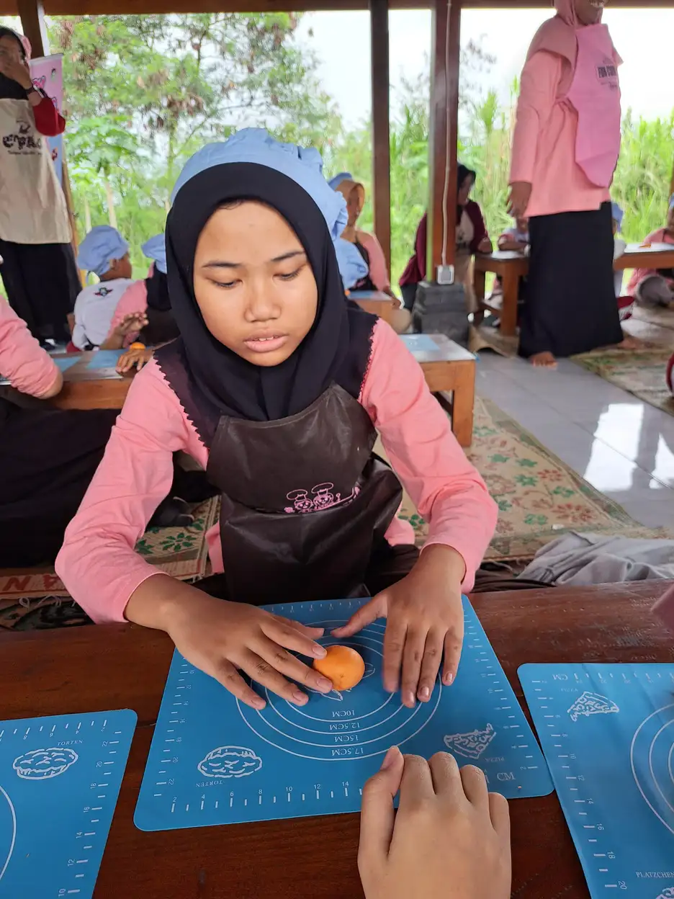
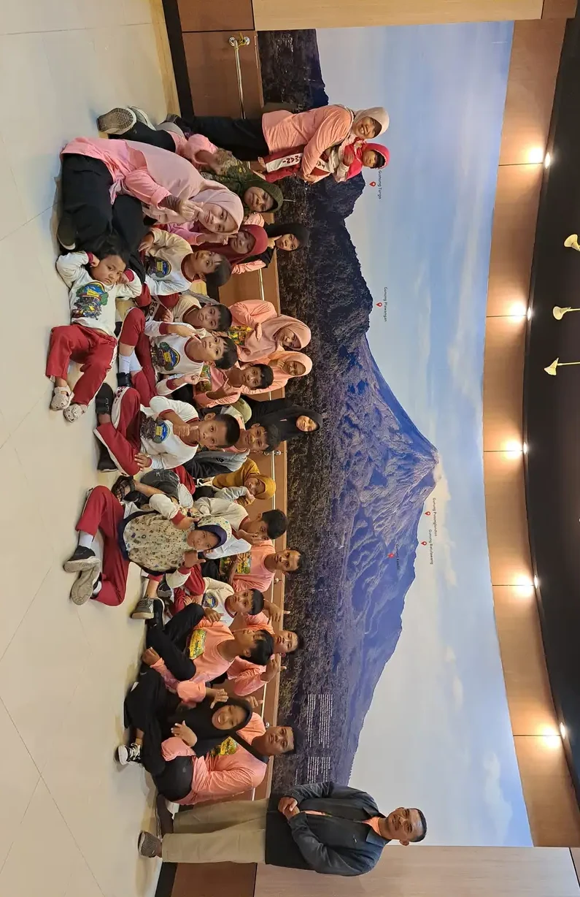
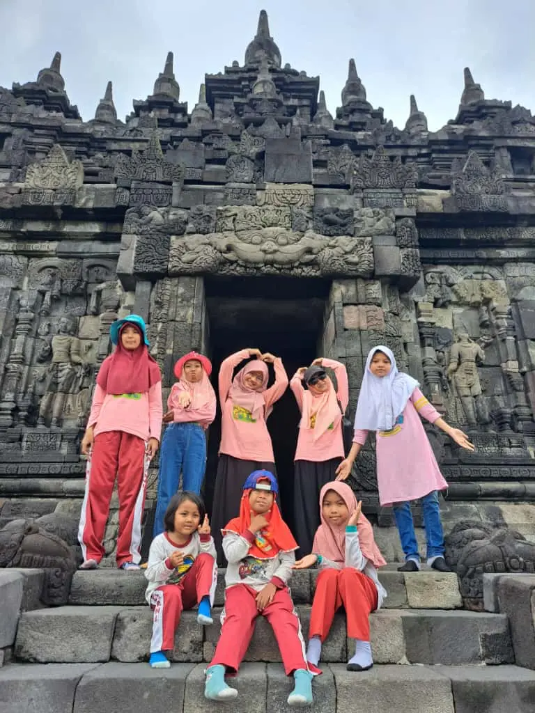

Cara berkomunikasi dengan anak tunarungu perlu menyesuaikan bahasa, visual, alat bantu, dan lingkungan. Pelajari langkah praktis untuk rumah dan sekolah. Dukungan yang tepat dimulai dari kebutuhan nyata anak, komunikasi yang dihormati, dan langkah yang dapat dievaluasi bersama.
Setiap anak memiliki profil, minat, dan kebutuhan dukungan yang berbeda. Karena itu, panduan ini menggunakan bahasa yang menghormati anak serta mendorong keluarga, guru, dan pendamping untuk mengamati, mencoba, lalu menyesuaikan strategi secara bertahap.
Daftar Isi
- Mulai dari Profil Komunikasi Anak
- Bangun Perhatian dengan Cara yang Aman
- Gunakan Bahasa Isyarat, Tulisan, dan Bicara secara Fleksibel
- Strategi Percakapan di Rumah
- Strategi Komunikasi di Sekolah
- Perhatikan Alat Bantu dan Lingkungan
- Kesalahan yang Perlu Dihindari
- Rencana Latihan Komunikasi Selama Tujuh Hari
- FAQ
Mulai dari Profil Komunikasi Anak
Cara berkomunikasi dengan anak tunarungu tidak memiliki satu rumus yang berlaku untuk semua anak. Sebagian anak menggunakan bahasa isyarat, sebagian mengandalkan membaca gerak bibir, tulisan, alat bantu dengar, implan koklea, komunikasi total, atau gabungan beberapa cara. Langkah pertama adalah memahami cara yang paling efektif dan paling nyaman bagi anak.
Gangguan pendengaran dapat memengaruhi akses anak terhadap percakapan, instruksi, dan informasi spontan. WHO menjelaskan bahwa dukungan yang tepat dapat membantu seseorang berpartisipasi dalam pendidikan, pekerjaan, dan kehidupan sosial. Karena itu, keluarga sebaiknya tidak hanya bertanya apakah anak bisa mendengar, tetapi juga bagaimana anak menerima pesan dan menyampaikan jawabannya.
Amati situasi yang membuat komunikasi lancar. Apakah anak lebih mudah memahami kalimat pendek, tulisan, gambar, atau bahasa isyarat? Apakah ia perlu melihat wajah lawan bicara? Apakah suara latar membuatnya cepat lelah? Catatan observasi selama beberapa hari akan lebih berguna daripada kesimpulan yang dibuat dari satu kejadian.
Libatkan anak dalam menentukan cara komunikasi. Tanyakan pilihan dengan bahasa yang mudah, berikan dua atau tiga opsi, dan beri waktu untuk menjawab. Jika anak belum dapat menyampaikan pilihan secara lisan, perhatikan gestur, ekspresi, arah pandang, atau penggunaan kartu pilihan. Komunikasi yang menghargai pilihan membuat anak merasa aman untuk berinteraksi.
Jika keluarga masih bingung, lakukan asesmen yang sesuai dan diskusikan hasilnya dengan tenaga profesional. Asesmen ABK membantu memetakan kebutuhan belajar dan komunikasi, tetapi hasil asesmen tidak boleh dipakai untuk menghapus suara anak. Tujuannya adalah menemukan dukungan yang membuat anak lebih mudah memahami dan dipahami.
Bangun Perhatian dengan Cara yang Aman
Sebelum menyampaikan pesan, pastikan anak siap memperhatikan. Berdirilah di posisi yang dapat dilihat, gunakan sentuhan ringan hanya jika anak nyaman, lambaikan tangan dari jarak aman, atau minta bantuan teman untuk memberi tanda visual. Hindari berteriak dari ruangan lain karena suara keras tidak otomatis membuat pesan lebih jelas.
Pastikan wajah cukup terang dan tidak tertutup masker, tangan, atau benda lain ketika membaca gerak bibir menjadi bagian dari strategi komunikasi. Jangan berdiri membelakangi jendela dengan cahaya kuat karena wajah akan terlihat gelap. Jarak yang wajar membantu anak melihat ekspresi, gestur, dan arah perhatian.
Gunakan ekspresi yang sesuai dengan pesan, tetapi jangan berlebihan sampai mengganggu. Tunjukkan benda yang sedang dibicarakan, gunakan gambar, tulis kata kunci, atau beri isyarat arah. Prinsipnya adalah membuat informasi lebih mudah dilihat tanpa mengubah percakapan menjadi pertunjukan.
Berikan satu pesan utama dalam satu waktu. Setelah menyampaikan instruksi, beri jeda dan periksa pemahaman dengan meminta anak menunjukkan, memilih, atau mengulang menggunakan caranya sendiri. Pertanyaan seperti “sudah paham?” sering menghasilkan jawaban yang tidak akurat karena anak mungkin ingin segera mengakhiri percakapan.
Di rumah, keluarga dapat menyepakati tanda visual untuk aktivitas berulang, seperti makan, mandi, tidur, berangkat, dan berhenti. Sistem ini dapat dipadukan dengan jadwal visual yang disesuaikan dengan usia anak. Walaupun contoh tersebut sering dipakai pada autisme, prinsip visualisasi rutinitas juga dapat membantu anak dengan kebutuhan komunikasi lain.
Gunakan Bahasa Isyarat, Tulisan, dan Bicara secara Fleksibel
Bahasa isyarat dapat menjadi bahasa utama bagi anak yang menggunakannya. Keluarga tidak perlu menunggu anak fasih terlebih dahulu untuk mulai belajar. Mulailah dari kosakata yang dipakai setiap hari, seperti nama anggota keluarga, makan, minum, sakit, senang, tidak mau, selesai, dan tolong. Konsistensi lebih penting daripada menghafal banyak tanda sekaligus.
Indonesia memiliki variasi praktik bahasa isyarat. Tanyakan bahasa yang digunakan komunitas dan sekolah anak, lalu belajar dari sumber atau pengajar yang kompeten. Bacaan tentang bahasa isyarat dan BISINDO dapat menjadi pintu masuk, tetapi keluarga tetap perlu mengikuti kebutuhan anak dan komunitas yang menjadi rujukannya.
Tulisan, gambar, dan papan komunikasi membantu ketika lawan bicara belum menguasai bahasa isyarat. Siapkan catatan kecil atau aplikasi catatan pada ponsel untuk tempat umum. Gunakan kalimat sederhana dan hindari menulis terlalu panjang ketika anak sedang lelah. Jika anak lebih nyaman memakai gambar, jangan memaksa semua pesan berubah menjadi teks.
Sebagian anak memakai alat bantu dengar atau implan koklea untuk mengakses suara. Alat tersebut perlu dirawat dan diperiksa sesuai petunjuk. Namun alat bantu bukan alasan untuk menghapus dukungan visual. Lingkungan bising, jarak jauh, kelelahan, atau gangguan teknis dapat membuat akses suara berkurang.
Komunikasi multimodal berarti anak boleh memakai lebih dari satu cara. Ia dapat menggabungkan bahasa isyarat, tulisan, bicara, gambar, dan gestur. Pendekatan ini sejalan dengan kebutuhan individual dalam pendidikan inklusi, karena tujuan utama pendidikan adalah akses terhadap pembelajaran, bukan memaksa semua anak menggunakan media yang sama.
Strategi Percakapan di Rumah
Buat percakapan menjadi bagian dari rutinitas, bukan sesi latihan yang menegangkan. Saat memasak, tunjukkan bahan dan bicarakan urutan langkah. Saat berpakaian, tawarkan pilihan. Saat bepergian, jelaskan tujuan dan perubahan rute. Kegiatan sehari-hari menyediakan konteks visual sehingga anak lebih mudah menghubungkan kata, isyarat, dan pengalaman.
Gunakan kalimat yang jelas, lalu tunggu respons. Jangan menyelesaikan semua kalimat anak atau menjawab atas namanya ketika orang lain bertanya. Bila anak memerlukan waktu, beri jeda. Jika pesan belum dipahami, minta anak mengulang dengan cara yang ia pilih, bukan langsung menyimpulkan bahwa anak tidak mampu berkomunikasi.
Ajarkan kosakata untuk menyampaikan kebutuhan, perasaan, dan batasan. Anak perlu dapat mengatakan sakit, takut, lelah, tidak mau, berhenti, ulangi, dan bantu. Kemampuan menolak sama pentingnya dengan kemampuan meminta. Orang tua dapat membaca tentang peran orang tua dalam pendidikan inklusi untuk memperkuat kolaborasi rumah dan sekolah.
Buat ruang komunikasi keluarga yang konsisten. Semua anggota keluarga sebaiknya menggunakan tanda atau tulisan yang sama untuk pesan penting. Saudara kandung dapat diajak belajar dengan cara yang menyenangkan, tetapi jangan menjadikan mereka penerjemah utama sepanjang waktu. Anak tunarungu tetap berhak berkomunikasi langsung dengan orang dewasa di rumah. Baca juga pengertian tunarungu agar keluarga memiliki istilah dasar yang sama.
Jika ada salah paham, tenangkan suasana sebelum memperbaiki pesan. Tunjukkan bahwa kesalahan komunikasi adalah masalah yang dapat diselesaikan bersama, bukan kesalahan moral anak. Sikap ini membantu mengurangi rasa malu dan membuat anak lebih berani memulai percakapan.
Strategi Komunikasi di Sekolah
Sekolah perlu menyepakati rencana komunikasi individual. Dokumen ini dapat memuat cara anak menerima instruksi, media yang digunakan, posisi duduk, kebutuhan pencahayaan, waktu jeda, dan cara mengecek pemahaman. Program pembelajaran individual dapat menjadi tempat menyatukan target akademik, komunikasi, dan kemandirian.
Guru sebaiknya menuliskan instruksi penting di papan atau lembar kerja, bukan hanya menyampaikannya secara lisan. Ketika kelas berpindah ruangan atau jadwal berubah, berikan informasi lebih awal. Anak dapat diberi peta sederhana, jadwal visual, atau pesan tertulis agar tidak kehilangan konteks.
Posisi duduk perlu mempertimbangkan akses melihat guru, penerjemah, papan tulis, dan teman. Hindari berbicara sambil berjalan membelakangi kelas. Saat diskusi, satu orang berbicara pada satu waktu dan guru mengulang pertanyaan teman sebelum meminta anak menjawab.
Teman sebaya dapat belajar etika komunikasi sederhana: menghadap ketika berbicara, tidak mengejek cara bicara, menulis ulang jika pesan tidak jelas, dan meminta izin sebelum menyentuh alat bantu. Ini bukan hanya membantu anak tunarungu, tetapi juga membangun inklusi sosial di kelas.
Jika anak mengikuti sekolah inklusi, keluarga perlu menjadwalkan evaluasi bersama guru dan pendamping. Bicarakan kemajuan berdasarkan contoh yang dapat diamati, misalnya mampu mengikuti tiga langkah instruksi dengan dukungan gambar. Hindari laporan umum seperti anak sudah lebih baik tanpa bukti perilaku yang jelas.
Perhatikan Alat Bantu dan Lingkungan
Alat bantu dengar, implan, mikrofon jarak jauh, papan tulis digital, caption, dan aplikasi transkripsi dapat membantu akses. Pilih alat berdasarkan kebutuhan, kemampuan mengoperasikan, biaya perawatan, dan dukungan layanan. Jangan membeli perangkat hanya karena sedang populer atau mendapat rekomendasi dari iklan.
Keluarga perlu memiliki rencana cadangan. Bawa kertas dan alat tulis, simpan baterai atau pengisi daya sesuai kebutuhan, dan beri tahu sekolah apa yang harus dilakukan jika alat mengalami masalah. Anak juga perlu diajarkan cara melaporkan ketika suara terputus, alat terasa sakit, atau perangkat tidak berfungsi.
Kurangi kebisingan yang tidak perlu. Tutup pintu, gunakan permukaan yang mengurangi gema, atur jarak bicara, dan pilih tempat dengan pencahayaan baik. Penyesuaian sederhana dapat membuat percakapan lebih mudah tanpa menuntut anak bekerja lebih keras.
Untuk kebutuhan bicara yang menyertai gangguan pendengaran, keluarga dapat berdiskusi dengan terapis wicara. Layanan tersebut sebaiknya terhubung dengan pilihan bahasa anak, bukan dipakai untuk memaksa satu cara komunikasi. Tujuan intervensi adalah memperluas akses dan partisipasi.
Kesalahan yang Perlu Dihindari
Jangan berbicara kepada pendamping seolah-olah anak tidak ada. Sampaikan pesan kepada anak, lalu gunakan pendamping atau penerjemah sebagai jembatan bila diperlukan. Anak berhak diperlakukan sebagai peserta percakapan, bukan objek pembicaraan.
Jangan berpura-pura memahami jika pesan belum jelas. Minta pengulangan dengan cara yang sopan, tulis kata kunci, atau tawarkan pilihan. Berpura-pura paham dapat membuat keputusan penting salah, terutama ketika berkaitan dengan kesehatan, keselamatan, dan kegiatan sekolah.
Jangan menganggap kemampuan mendengar menentukan kecerdasan. Hambatan akses komunikasi dapat terlihat seperti tidak memperhatikan atau tidak memahami, padahal anak belum menerima informasi dengan cara yang sesuai. Berikan akses terlebih dahulu sebelum menilai kemampuan.
Jangan menyamakan semua anak tunarungu. Identitas, bahasa, tingkat pendengaran, pengalaman sekolah, alat bantu, dan preferensi tiap anak berbeda. Dengarkan anak dan keluarga, lalu sesuaikan dukungan berdasarkan data yang terus diperbarui.
Rencana Latihan Komunikasi Selama Tujuh Hari
Hari pertama dapat dipakai untuk mencatat situasi komunikasi yang lancar dan sulit. Hari kedua, keluarga menyepakati lima pesan inti beserta media yang dipakai. Hari ketiga, semua anggota keluarga berlatih menggunakan pesan tersebut dalam rutinitas makan atau berangkat sekolah.
Hari keempat, buat satu papan pilihan atau catatan digital untuk aktivitas yang paling sering dilakukan. Hari kelima, ajak anak memilih cara menyampaikan satu kebutuhan dan beri waktu respons tanpa mengambil alih. Hari keenam, evaluasi apakah lingkungan, pencahayaan, jarak, atau kebisingan perlu diubah.
Hari ketujuh, rangkum strategi yang berhasil dan bagikan kepada guru atau pendamping. Rencana ini bukan pengganti asesmen profesional. Tujuannya adalah membangun kebiasaan keluarga mengamati, mencoba, lalu memperbaiki dukungan berdasarkan pengalaman nyata anak.



Rujukan tepercaya
Rujukan berikut dipakai untuk menjelaskan prinsip umum. Rujukan bukan pengganti diagnosis, keputusan administrasi, atau konsultasi profesional.
FAQ Seputar Topik Ini
Bagaimana cara memulai komunikasi dengan anak tunarungu?
Pastikan anak melihat Anda, gunakan media komunikasi yang biasa dipakai, sampaikan satu pesan utama, lalu beri waktu untuk merespons. Tanyakan atau amati cara yang paling nyaman bagi anak.
Apakah semua anak tunarungu harus memakai bahasa isyarat?
Tidak ada satu metode yang wajib untuk semua anak. Sebagian memakai bahasa isyarat sebagai bahasa utama, sebagian memakai bicara, tulisan, alat bantu, atau kombinasi. Pilihan perlu disesuaikan dengan akses, identitas, dan preferensi anak.
Bagaimana berbicara dengan anak yang memakai alat bantu dengar?
Hadap anak, pilih tempat dengan pencahayaan dan kebisingan yang baik, gunakan kalimat jelas, dan pastikan alat berfungsi. Tetap sediakan dukungan visual karena akses suara dapat berubah sesuai situasi.
Apa yang harus dilakukan jika tidak memahami pesan anak?
Jujur bahwa pesan belum dipahami, minta pengulangan, tawarkan tulisan atau gambar, lalu konfirmasi kembali maksud anak. Hindari menebak untuk hal yang penting.
Bagaimana sekolah mendukung komunikasi anak tunarungu?
Sekolah dapat menyediakan instruksi tertulis, posisi duduk yang tepat, dukungan penerjemah atau pendamping bila diperlukan, aturan diskusi satu per satu, dan rencana komunikasi individual yang dievaluasi bersama keluarga.
Kesimpulan
Dukungan yang baik tidak harus rumit. Mulailah dari informasi yang benar, komunikasi yang jelas, lingkungan yang aman, dan keputusan yang melibatkan anak. Jika kebutuhan berubah, rencana juga boleh berubah. YUKA mendorong keluarga dan pendamping untuk membangun kesempatan belajar dan berpartisipasi dengan hormat.